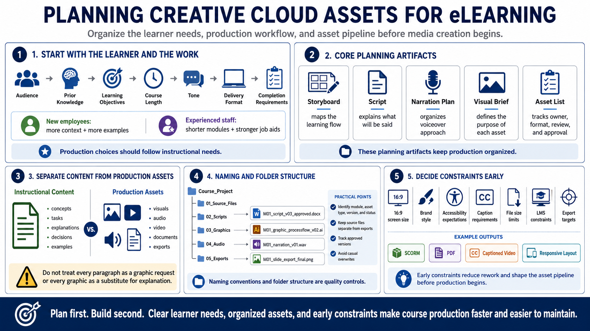

Planning the Course and Asset Pipeline
Connecting to LMS... Progress: in progress

Narration
Planning begins with the learner and the work they need to perform. Define the audience, prior knowledge, learning objectives, course length, tone, delivery format, and completion requirements. A course for new employees may need more context and examples. A refresher for experienced staff may need shorter modules and stronger job aids. Production choices should follow those instructional needs.
Storyboards, scripts, narration plans, visual briefs, and asset lists keep production organized. A storyboard maps the learning flow. A script explains what will be said. A visual brief describes the purpose of each graphic or media asset. An asset list tracks what must be created, who owns it, what format is needed, and whether it has been reviewed and approved.
Separate instructional content from production assets. The content explains what learners need to know or do. The asset pipeline defines the visuals, audio, video, documents, and exports needed to teach that content. This distinction helps teams avoid treating every paragraph as a graphic request or every graphic as a substitute for explanation.
Naming conventions and folder structure are practical quality controls. Use file names that identify module, asset type, version, and status. Keep source files separate from exports. Track approved versions and avoid overwriting final assets casually. Even a small course can become difficult to revise when images, audio, scripts, and exports are scattered or ambiguously named.
Decide constraints early: screen size, brand style, accessibility expectations, caption requirements, file size limits, LMS constraints, and export targets. Those decisions reduce rework. If a course will use 16:9 screens, responsive layouts, SCORM tracking, downloadable PDFs, and captioned videos, those facts should influence the asset pipeline before production begins.